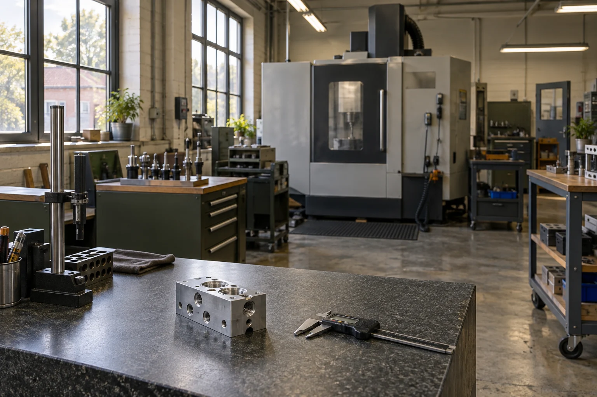

PROJECT ENGINEERING
Define the job.
Review the drawing, confirm the material and quantities, and keep commercial decisions separate from unresolved technical questions.
OUR WORKSHOP
Noll Datum is an owner-led machining workshop in Bristol, built around repeat work for equipment makers across the UK and Ireland.

BUILT AROUND EQUIPMENT BUILDERS
Noll Datum began with a specific proposition: give smaller equipment companies a machining partner that can stay with a part as it moves from an initial batch to a repeat order.
The founders built the workshop around milling and turning rather than expanding into every fabrication process. That focus gives buyers a clear boundary and engineers a direct route to the people planning the work.
We make and dimensionally inspect in-house. When a drawing calls for a finish we do not carry out ourselves, we agree the external route before quoting it.
THREE CONNECTED RESPONSIBILITIES
A named engineer is responsible for each enquiry. The person running the setup and the person preparing the inspection record work from the same accepted job information.
PROJECT ENGINEERING
Review the drawing, confirm the material and quantities, and keep commercial decisions separate from unresolved technical questions.
MACHINING
Plan the setups around the features that locate the part. Record the agreed route so repeat work begins with useful history.
INSPECTION & DISPATCH
Check the nominated features, identify the supplied batch and assemble the documentation agreed with the order.
WORKING TOGETHER
Our service area is the UK and Ireland. Collection or delivery arrangements, packaging needs and any cross-border paperwork would be agreed within a real quotation.
Workshop visits would be by arrangement. This demonstration does not publish a real business address or phone number.
Use the enquiry builder to organise a part reference, material, quantity and inspection needs. It shows the review questions that follow from your choices.
Demonstration contact:
workshop@noll-datum.example
This example address is not monitored. Nothing submitted on this website is emailed or booked into production.
Prepare an enquiry